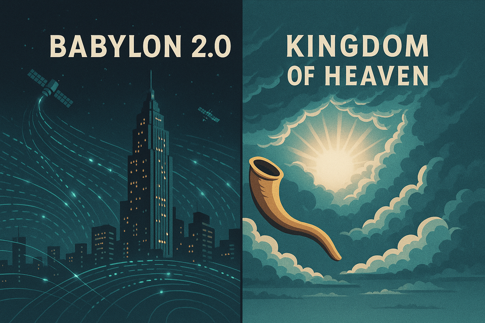

🕎 The Season of the Trumpets
When Heaven Sounds and the Earth Hesitates
🕰️ Revised: Nov 2026

1️⃣ The Awakening
A trumpet blast can gather a people, mark a sacred moment, or sound an alarm. In Israel’s calendar, the first day of the seventh month is set apart as a day of rest and sacred assembly, marked by trumpet blasts. Leviticus calls it a “memorial proclaimed with blast of trumpets”; Numbers describes it as a day of trumpet blasts. The Hebrew name Yom Teruah is often rendered “Day of Trumpets” or “Day of Shouting.” In Jewish life today, this day is widely known as Rosh Hashanah, the Jewish New Year.
The day opens a stretch of reflection that leads toward Yom Kippur, the Day of Atonement. The ten days from Rosh Hashanah through Yom Kippur are commonly called the Days of Awe or Days of Repentance. Then, on the fifteenth day of the month, comes Sukkot, the Feast of Tabernacles. The rhythm is striking:
Trumpets → reflection and return → Atonement → dwelling with God.
In Jewish communities, Rosh Hashanah is observed with prayer and shofar blasts, time for reflection, and festive meals. Customs vary; many families share symbolic foods such as apples dipped in honey as a wish for a sweet new year. During the Days of Awe, people focus on repentance, repairing relationships, and beginning the year well. Yom Kippur is marked by prayer and fasting. At Sukkot, many build or visit a sukkah—a temporary booth—and share meals there, remembering Israel’s wilderness journey.
That’s the lived rhythm behind the timeline—not a countdown chart in Scripture, but a calendar that invites people to remember, turn back, make things right, and celebrate God’s care.
“Blow the trumpet in Zion, sound the alarm on My holy mountain.” — Joel 2:1
Joel’s trumpet is an alarm in a passage about the day of the Lord, not a description of the Rosh Hashanah service. Still, the image resonates: a sound that interrupts ordinary life and calls people to pay attention.
That image is where I begin to see a connection to Babylon 2.0. Our world is filled with signals—networks, screens, satellites, alerts—competing for our attention. I’m not saying that Wi-Fi or a data outage is itself a biblical sign. I see the contrast as a spiritual metaphor: the noise of human systems beside the call to listen for God. I explore that modern-system idea more fully in Babylon 2.0.
2️⃣ The Days of Awe
Rosh Hashanah is joyful, but it also opens a serious season of reflection. The Days of Awe—from Rosh Hashanah through Yom Kippur—invite people to look honestly at the year behind them, seek forgiveness, and repair what can be repaired.
Jewish tradition also speaks of the Book of Life during these holy days. This imagery draws on biblical language and later rabbinic teaching; it is a way of expressing the gravity of our choices and the hope that people can turn toward a better path. It isn’t a simple timeline spelled out in Leviticus.
“Seek the Lord while He may be found; call upon Him while He is near.” — Isaiah 55:6
For me, that pause has a modern mirror. The constant feed keeps moving—news, alerts, predictions, noise. The Days of Awe ask a different question: Can we become quiet enough to examine our lives, make peace, and listen? That is a spiritual reflection, not a claim that algorithms stalling or data blackouts mark a prophetic countdown. The real alarm may be the one that wakes the conscience.
3️⃣ The Day of Atonement
Then comes Yom Kippur, the Day of Atonement. Leviticus describes a sacred day of rest and self-denial, with a detailed ritual in which the High Priest makes atonement for the people and enters the Holy of Holies. The ceremony belongs to Israel’s ancient worship; it deserves to be understood on its own terms before we draw later interpretations from it.
As a Christian, I also read this day alongside the New Testament’s portrayal of Jesus as High Priest, especially in Hebrews. That is a Christian theological connection—not the only way Jewish readers understand Yom Kippur, and not a claim that the biblical calendar itself spells out every end-times event.
“And the books were opened… and the dead were judged.” — Revelation 20:12
Revelation’s judgment scene adds weight to my reflection on accountability and mercy. It doesn’t say that Yom Kippur is a date for a coming system reset. But the image challenges me: what deserves my loyalty, and what will remain when the powers we trust are gone?
4️⃣ The Feast of Tabernacles
Five days after Yom Kippur begins Sukkot, the Feast of Tabernacles. Leviticus describes it as a seven-day festival. Its temporary shelters recall Israel’s wilderness years, and the festival is also a time of rejoicing and gratitude for the harvest.
For Christians, the image of God dwelling with humanity can also call to mind the hope in Revelation:
“Behold, the dwelling of God is with men.” — Revelation 21:3
That connection is part of my Christian reading of the season. The story doesn’t end with an alarm or a judgment scene. It moves toward presence: God dwelling with people.

⚖️ The Mirror of Two Kingdoms
The festival calendar gives us a rhythm of remembrance, reflection, atonement, and dwelling. I see another mirror beside it: Babylon 2.0—our towers, networks, and systems of influence—set against the Kingdom of Heaven, where truth and presence matter more than power and noise.
That mirror is my interpretation, not a claim that the feasts name modern technology. The question they leave me with is personal: What am I listening to, and which kingdom is shaping my heart? For the longer version of that modern parallel, see Babylon 2.0.
🕯️ Closing Reflection
The shofar’s call still carries power: wake up, gather, remember, and turn back toward what is holy. In Jewish life, these days hold a living rhythm of celebration, reflection, repentance, fasting, and dwelling in temporary shelters. For me, they also point toward a Christian hope: that God’s call is not meant to leave us afraid, but to draw us toward mercy and life in Jesus Christ.
I can’t claim that every crisis, signal, or silence in our wired world is a sign from heaven. But the season gives me a lens for asking what deserves my attention—and a reminder that no human system can take the place of God.
The echo moves from trumpet to reflection, from atonement to dwelling. The season doesn’t end in fear. It ends in Presence.
📚 Sources & Further Reading
- Leviticus 23:23–43 — the seventh-month observances, including Trumpets, the Day of Atonement, and Tabernacles.
- Numbers 29:1–12 — offerings for Trumpets and the Day of Atonement.
- Jewish Virtual Library: The Days of Awe — overview of the ten days from Rosh Hashanah to Yom Kippur and related traditions.
- Leviticus 16 and Hebrews 9 — the ancient atonement ritual and the New Testament’s Christian High Priest interpretation.
- Revelation 21:3 — the image of God dwelling with humanity.
- Babylon 2.0 — my related article on the modern parallel.